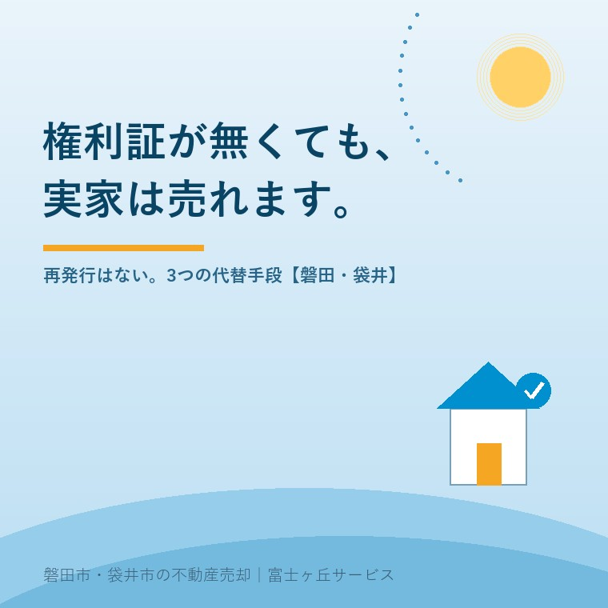

2026年8月8日｜カテゴリ：相場・地域・売却実務

この記事の要点
Q. お盆に実家の仏間を探したのですが、権利証がどうしても出てきません。もう売れないのでしょうか。
A. 売れます。ただし「再発行」という道はありません。権利証（登記済証）も、その後継である登記識別情報も、制度として再発行・再通知の仕組みが存在しないのです。紛失したら、代わりに「たしかに本人です」と証明する別の手段を使います。不動産登記法23条が用意しているのは①事前通知制度（無料・約2週間）②司法書士など資格者代理人による本人確認情報（5万〜10万円前後・決済日に対応可）③公証人の認証（数千円〜1万1000円・本人が役場へ出向く）の3つ。売買の決済では②がほぼ一択です。さらに相続した実家を売る場合は、そもそも亡くなった方の権利証が要らないことが多い──ここを知らずに探し続けて、夏を丸ごと使ってしまう方が本当に多いのです。磐田市・袋井市・森町では、介護施設の運営から不動産事業を始めた富士ヶ丘サービスのような地域密着の会社に、探す前に一度相談するという選択肢があります。
お盆前のこの時期、いちばん多いご相談が「権利証が見つからない」です。仏壇の引き出し、桐の箪笥の三段目、貸金庫、押入れの菓子箱。心当たりを全部開けても出てこない。そして決まって、こうおっしゃいます。「これが無いと売れないんでしょう？」
結論から申し上げます。売れます。権利証は「無いと登記できない書類」ではなく、「あると手続きが軽くなる書類」です。無い場合の代わりの道は、法律にきちんと書いてあります。今日はその3本の道を、費用と日数と「決済に使えるかどうか」で並べてご説明します。
「権利証」と一口に言いますが、実は世代の違う2種類があります。実家の取得時期で決まります。
| 名称 | 見た目 | いつのもの |
|---|---|---|
| 登記済証（旧・権利証） | 司法書士の厚紙表紙に綴じられた冊子。中の申請書に法務局の朱色の「登記済」印が押してある | おおむね平成17年〜20年より前に取得した不動産 |
| 登記識別情報通知 | A4の1枚もの。下部に12桁の英数字が印字され、目隠しシール（または折込み）で隠されている | その法務局がオンライン庁に指定された日以降に取得した不動産 |
制度が切り替わったのは、平成17年（2005年）3月7日施行の改正不動産登記法です。ただし全国一斉ではなく、法務局ごとに「オンライン指定庁」となった日から順次移行し、全国の登記所で移行が完了したのは平成20年（2008年）7月でした。
ですから、磐田・袋井のご実家──親御さんが昭和40〜50年代に建てた家であれば、探しているのはほぼ間違いなく登記済証（厚紙の冊子）です。「12桁の英数字なんて見た覚えがない」のは当然で、そもそも発行されていません。
ここで大事な注意をひとつ。登記識別情報通知が見つかった方は、目隠しシールを絶対に剥がさないでください。登記識別情報は「紙」ではなく「12桁の英数字そのもの」が本体です。番号を知られた時点で、紙が手元にあっても意味を失います。剥がすのは、司法書士に渡す当日で構いません。
ここが誤解の多いところです。役所の書類ですから、手数料を払えば再発行してくれそうな気がします。しかし違います。
登記識別情報は、登記が完了したときに一度だけ通知されるもので、紛失・盗難・受け取り忘れのいずれの場合でも、同じ情報を改めて通知する制度は設けられていません。旧来の登記済証も同じで、再作成はされません。
理由は制度の性格にあります。権利証は「所有権の証明書」ではないのです。所有権を証明しているのは登記簿（登記記録）のほうで、権利証は「登記を申請してきたこの人は、間違いなく登記名義人本人だ」という確認手段のひとつにすぎません。再発行できてしまえば、なりすましの入口になります。だから、あえて作らない。
逆に言えば、本人であることさえ別の方法で確認できれば、登記は通ります。これが次の3つの道です。
まず全体像を表でご覧ください。
| 手段 | 根拠 | 費用の目安 | 期間 | 売買の決済 |
|---|---|---|---|---|
| ①事前通知制度 | 不動産登記法23条1項 | 無料 | 発送から2週間以内に返送（海外居住は4週間） | 使えないのが実務 |
| ②資格者代理人による本人確認情報 | 同23条4項1号 | 司法書士報酬 5万〜10万円前後（事案により15万円程度まで） | 面談と資料収集で数日〜 | ○ 決済日に申請できる |
| ③公証人の認証 | 同23条4項2号 | 認証手数料 数千円〜1万1000円 | 役場の予約次第（数日） | △ 本人が役場へ出向ける場合 |
権利証を付けずに登記を申請すると、登記官が登記義務者（＝売主）宛てに「こういう登記の申請がありましたが、間違いありませんか」という通知を送ります。自然人の場合は本人限定受取郵便またはこれに準ずる方法で送られます（不動産登記規則70条）。届いた通知書に署名・押印して法務局へ返送し、登記官が確認して初めて登記が実行されます。
返送の期限は通知の発送日から2週間以内。登記名義人の住所が外国にあるときは4週間以内です。費用はかかりません。
もうひとつ、所有権に関する登記で、かつ売主が住所変更登記をしている場合には、前住所への通知も原則として送られます（同法23条2項）。ただし、行政区画の変更による住所変更のときや、最後の住所変更登記の受付日から3か月を経過した後の申請のときは、この前住所通知は送られません（不動産登記規則71条2項）。施設入居にともなって住民票を移した直後の売却では、ここに1つ工程が増えることがあります。
さて、無料でよさそうに見えるこの制度が、なぜ売買で使われないのか。理由はただ一つ、登記が完了するかどうかが、その日には確定しないからです。
不動産の決済は、買主がお金を払い、同時に所有権移転登記を申請することで成立します。買主も、住宅ローンを出す金融機関も、「代金を払った瞬間に、確実に登記が入る」ことを大前提にお金を動かします。ところが事前通知だと、通知が返ってくるまで2週間、宙ぶらりんになる。返送されなければ登記は却下されます。この不確実性を、買主も銀行も飲みません。
ですから事前通知が実際に使われるのは、贈与や親族間の名義変更など、お金の授受と切り離せる場面に限られます。「無料だから」と選べるものではない、とご理解ください。
登記を代理する司法書士が、売主本人と直接面談し、運転免許証やマイナンバーカードなどで本人性を確認し、さらに「この不動産の登記名義人本人に間違いない」と判断できるだけの事情を聴き取って、その内容を書面にまとめます。これが本人確認情報です。登記官がその内容を相当と認めれば、事前通知は行われず、決済日にその場で登記を申請できます。
面談で必ず聞かれるのは、次のようなことです。
費用は司法書士報酬として5万〜10万円程度が相場で、事案によっては15万円程度になることもあります。所有権移転登記の報酬とは別建てです。決して安くはありませんが、これは「探し続ける時間」を買う費用だとお考えください。仏間を三日探すより、この方が確実に安く済みます。
ひとつ現実的なご注意を。司法書士は「本人と面談していない」書面を作れません。売主である親御さんが施設や病院におられる場合は、司法書士がそちらへ出向いて面談します。そして──ここが介護の現場を見てきた会社として最も申し上げたいところですが──認知症が進んで意思の確認ができない状態になると、この方法も使えなくなります。本人確認情報は「本人であること」だけでなく「申請する意思があること」も確認する書面だからです。その場合は成年後見の話になり、売却は別の次元の難しさに入ります。詳しくは認知症と実家の凍結の回をご覧ください。
3つ目は、公証人に登記の委任状を認証してもらう方法です。公証人が「この委任状に署名したのは、たしかに登記義務者である本人だ」と確認して認証し、登記官がその内容を相当と認めれば、やはり事前通知は省略されます。
本人が運転免許証やパスポートなどを持って公証役場へ行き、公証人と直接面談します。手数料は、日本公証人連合会によれば私署証書の認証が原則1万1000円、ただし委任状の認証は4000円とされています（実際の適用は書面の内容によりますので、役場にご確認ください）。②に比べれば、桁がひとつ違います。
それでも売買の現場で②が選ばれ続けているのは、売主が役場まで出向かなければならないという一点に尽きます。高齢の親御さんを、決済に間に合うタイミングで公証役場へお連れする。この段取りが、施設に入っておられる方には現実的でないことが多いのです。お元気で、ご自分で車を運転される親御さんなら、③は十分に検討に値します。司法書士に相談する際、「公証人の認証で足りませんか」と一度聞いてみてください。
ここまで読んで、少し安心していただけたと思います。そのうえで、多くの方に当てはまる話をします。
親御さんが亡くなり、相続で名義を変える（相続登記をする）場合、亡くなった方の権利証は原則として不要です。
相続登記に必要なのは、亡くなった方の出生から死亡までの戸籍、相続人全員の戸籍、遺産分割協議書と印鑑証明書、住民票の除票、固定資産評価証明書といった書類です。権利証は必要書類に入っていません。相続は「本人の意思で権利を手放す」場面ではなく、法律上当然に移転するものだからです。
つまり──「権利証が無いから相続登記もできない」というのは、多くの場合、誤解です。お盆に集まって遺産分割の話をするなら、権利証探しは横に置いて構いません。
ただし、例外がひとつ。亡くなった方の登記簿上の住所と、住民票の除票（または戸籍の附票）に記録された最後の住所がつながらない場合です。何度も転居されている、除票の保存期間が過ぎている、といったケースでは、「登記名義人と被相続人が同一人物である」ことを補強するために、権利証（登記済証）の添付を求められることがあります。この場合も、権利証が無ければ不在住証明・不在籍証明や相続人の上申書などで代替する運用がありますので、司法書士にご相談ください。
そして相続登記そのものは、令和6年4月1日から義務化され、正当な理由なく3年以内に申請しないと10万円以下の過料の対象です。権利証が見つからないことを理由に先延ばしにする理由は、もう無くなりました。
紛失には、もうひとつ別の心配がついてきます。空き家に置いたままだった、業者の出入りが多かった、失くしたのか盗られたのか分からない──そういう場合です。とくに登記識別情報は、12桁の英数字を見られただけで、紙が手元にあっても危険です。
| 制度 | 内容 | 費用 |
|---|---|---|
| 登記識別情報の失効の申出 | 登記名義人（またはその相続人その他の一般承継人）の申出により、その登記識別情報を効力のないものにする。以後は本記事の3つの代替手段で登記することになる | 手数料なし |
| 不正登記防止申出 | なりすまし登記を防ぐための申出。申出から3か月の間に登記申請があると、申出人に通知される。原則として本人が登記所に出頭して行う（やむを得ない事情があれば代理人も可） | 手数料なし |
どちらも無料です。「見られたかもしれない」と思ったら、まず失効の申出を検討してください。失効させても、不動産の所有権は1ミリも変わりません。失うのは「簡便に登記できる鍵」だけで、代わりの道は今日ご説明したとおり残っています。
なお、空き家に権利証や通帳を置いたままにしないこと。夏の空き家を1か月放置するとどうなるかの回でも書きましたが、夏は人の出入りが多い季節です。重要書類は、必ず相続人の誰かの手元へ移してください。
磐田市の不動産は静岡地方法務局 磐田出張所（磐田市見付3599-6／磐田地方合同庁舎2階）、袋井市と周智郡森町は袋井支局が管轄です。実家からそう遠くない場所にあります。
この地域のご実家は、昭和40〜60年代の取得が中心です。つまり探しているのは登記済証──司法書士事務所の名前が入った厚紙の表紙に、和綴じで綴じられた冊子です。ご経験上、出てくる場所には偏りがあります。
この最後の点は、意外と見落とされます。母屋の底地は登記済証、隣の畑は登記識別情報、道路部分は名義がそのまま──というのは、この地域では珍しくありません。お盆の境界立会いの回で申し上げたとおり、法務局で公図と登記事項証明書を取れば、何筆あるかは30分で分かります。探す前に、何を探すべきかを確定させる。これがいちばんの時短です。
富士ヶ丘サービスは磐田市見付で介護施設を運営するところから不動産事業を始めました。ですから「親御さんが施設におられて、権利証が実家のどこかにある」という状況を、数え切れないほど見てきました。探すのを手伝うこともできますし、探さずに進める段取りを組むこともできます。どちらが早いかは、ご事情によります。
権利証が見つからないことは、売却の障害ではありません。障害になるのは、見つからないまま何か月も探し続けて、動き出しが遅れることのほうです。お盆にご家族が集まったら、探すのは半日と決めて、残りの時間はこれからの段取りに使ってください。
売ると決めた後の手取り計算は手取りで考える実家の売却、翌年の負担は売った翌年に来るお金の回にまとめてあります。あわせてどうぞ。
ふじがおか実家カルテ｜権利証が無くても、今の状態は分かります
住所ひとつで、名義・筆数・抵当権の残りを確認します。
ご住所をいただければ、登記情報と公図から何筆あるか・名義は誰か・抵当権が残っていないか・権利証は登記済証と登記識別情報のどちらの世代かを調べ、1枚にまとめてお渡しします。権利証が見つからない場合に必要な手続きと概算費用も添えます。固定資産税の納税通知書の写真だけでも構いません。
本記事は2026年8月8日時点の公開情報に基づく一般的な解説です。司法書士報酬・公証人手数料は依頼先や書面の内容により異なり、公証人の認証手数料の適用区分は個別の書面ごとに公証役場が判断します。相続登記における添付書類の要否は登記所ごとの運用や事案により異なる場合があります。登記の可否・必要書類の最終的な判断は、必ず司法書士または管轄の法務局にご確認ください。表示に関する登記は土地家屋調査士、法的な紛争は弁護士、税務は税理士にご相談ください。個別のご相談は当社までどうぞ。

この記事を書いた人：大石浩之（宅地建物取引士）
磐田市・袋井市・森町で「介護×相続×空き家」に特化した不動産売却支援を行う富士ヶ丘サービスの代表取締役・宅地建物取引士。介護施設の運営から不動産事業を始めた経験をもとに、売主とご家族が困らない売却を一件ずつお手伝いしています。プロフィール
磐田市・袋井市・森町の実家じまい・相続空き家相談
固定資産税通知書だけでも相談できます
住所があいまいでも、通知書や写真から名義・道路・農地・残置物の確認順を整理します。カルテ申込またはLINEで状況を送ってください。
富士ヶ丘サービス株式会社／静岡県磐田市見付5789番地1／TEL:0538-31-3308／静岡県知事 (2) 第14083号／代表取締役・宅地建物取引士 大石 浩之